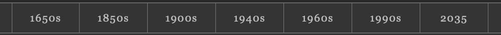
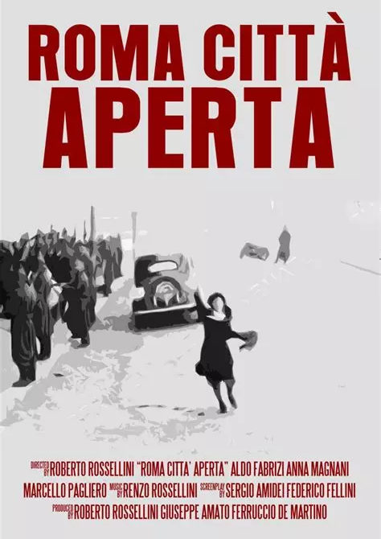

We began with one idea: the 1900s theme should evoke the experience of early cinema. We used Pinterest to look for specific references for theatre curtains, projection countdowns, admission tickets, film strips and printed cinema graphics. Those references helped us decide which elements could become part of the site’s navigation and visual design.
Cinema emerged in the late nineteenth century as experiments with photography, moving images and projection reached paying audiences. The early 1900s are the focus of this theme because they were a period of experimentation with what a film could show, how it could tell a story and where people could watch it.
A shared screen
At the Grand Café in Paris, the Lumière Cinématographe projected a programme of ten short films to a paying audience. Watching moving images together became part of the attraction.
Early films captured streets, crowds and public events. In the first years of the century, comic and dramatic stories grew alongside these short records of everyday life. Film became a way to document a place and a way to imagine what might happen there.
In the United States, nickelodeons helped make filmgoing a regular pastime. Audiences could attend a programme of short films in small venues dedicated to moving pictures.
The opening uses the curtain image tende.png, a radial highlight and a slightly tilted title. The curtain frames the page like a stage, while the lettering recalls a printed film title. The highlight guides the eye to the name of the project.
321
The countdown
A CSS overlay changes the numerals from 3 to 1, with concentric rings, a crosshair and a rotating sweep. It fades to reveal the title. The sequence borrows from projection leaders as a recognisable cue that a screening is about to begin. The reduced-motion version removes the sweep and shortens the fade.
ADMISSION · 01
Historical Journey
The admission ticket
The two itinerary cards use clipped corners, an inset border and printed labels. The ticket shape signals that choosing a route is an act of entry. Matching shapes give the two itineraries equal weight, while names and numbers distinguish them.
03. Typography
Display type
Rome in Two Takes
Used for page titles and section headings. The opening title adds italics, a slight tilt and a shadow to recall printed cinema lettering.
Georgia
A city seen through cinema
Used for paragraphs, captions and controls. Its serif forms recall printed material, while italics distinguish film names and subtitles.
04. Colour and materials
Charcoal#343434Page background
Dark graphite#292929Header and buttons
Archive charcoal#2c2b29Team and location cards
Soft grey#e2e2dfBody text on charcoal
Aged paper#d1cbbdPoster backs
Warm taupe#b8ad98Decorative corners and rules
The dark tones evoke a screening room and frame the photographs. Greys bring the interface closer to a photographic print, while warmer paper tones mark objects that visitors can read, such as tickets and poster backs.
05. Navigation and year selector

The main navigation links to places in the site. A separate, shallower strip puts the visual periods in chronological order. Equal cells and thin dividers echo film frames and give each period the same prominence. The restrained grey surface keeps the selector visible beside the main navigation. On smaller screens, the working selector scrolls horizontally so its labels have room.
06. Basemap and cartographic style
Jawg Light · Basemap reference
The pale streets and understated labels leave room for the charcoal and sepia routes. The map provides present-day orientation, while the markers, route colours and cards carry the theme’s early-cinema references.
The rectangular body, pale perforations and central dot turn each marker into a miniature film frame. The three versions show charcoal for Historical Journey, sepia for Women & Urban Space, and both colours for a shared location. The dot identifies the place that opens the popup.
Historical JourneyWomen & Urban Space
Two routes, one visual language
Charcoal and warm sepia distinguish the itineraries on the light basemap. Both paths use continuous lines to connect their stops in sequence. The route filters let visitors follow one itinerary at a time when the paths overlap.
08. Location lists and archive cards
Below the map, the individual itinerary views place a numbered film strip
alongside the stops. The perforations and repeated frames establish a
continuous reading path. Each number is anchored to its own stop, so the
label can sit beside the centre of the card even when descriptions vary
in length.
Each stop has an archive-style card with a dark surface and small pale
corner marks. The place name is the main heading, the film title is
separated by italic text, and the description follows underneath.
Transport and directions are quieter notes between cards so that the next
move is available without drawing attention away from the location itself.
The All locations view uses independent archive cards
and omits the film strip. This presents the places as a catalogue without
suggesting a route order. Where a place belongs to both itineraries, its
two links can sit side by side and wrap on a narrower screen.
01
Palazzo Federici
A Special Day
02
Cinecittà
The vertical strip connects the numbered stops and signals the reading order. The separate dark cards give each location a clear title and space for the film and description. The catalogue view drops the strip because its locations are independent entries.
09. Itinerary cards and scene viewer
On the homepage, numbered admission tickets introduce the two itineraries. Inside each route, perforated edges frame the scene like a strip of film. The paired photographs connect a location as it appears today with the way it was filmed.
Historical Journey
Scenes and their locations are presented in a sequence, with navigation arrows and a scene number to show where the reader is along the route.
Women & Urban Space
The same film frame brings together the view of the place today, the film image and the Story, Metadata and QR Code panels.
10. Posters, photographs and filters

Front · The film poster
The original Rome, Open City poster keeps its composition. Grayscale, a light sepia tint and added contrast give it the photographic tone used throughout the 1900s theme.
Rome, Open City
1945
by Roberto Rossellini
A landmark of Italian Neorealism, the film portrays
Rome during the Nazi occupation and the struggle of the Resistance.
Back · A printed film programme
Aged paper, a double rule and an orderly hierarchy of title, year, director and synopsis recall early printed cinema advertising and programmes. On the homepage, turning the poster reveals these credits.
The six posters span different decades. The 1900s treatment gives them a shared visual tone while keeping the films themselves identifiable.
11. Metadata and how it is displayed
StoryMetadataQR Code
Technical Details & Metadata
Cinematic Context
Location
Project
The metadata panel
The three categories let readers choose which kind of information they want. The pale panel stays within the same film frame as Story and QR Code, so switching views keeps the scene in context.
Cinematic Context
Film
A Special Day
Director
Ettore Scola
Year
1977
The record opens on its own
The original interface opens the selected record in a separate panel. The light paper and clear field labels make the details easy to scan. The project draws on Schema.org, Dublin Core and CIDOC CRM to describe films, locations and project credits.
12. The workflow film strip
01
Brainstorming
02
Research
03
Narrative Design
04
Information Architecture
05
Prototyping
06
Content and metadata
07
Development
The documentation turns the film strip horizontally. Each frame marks one step, so the same device that organises stops on the map also shows the sequence of the design process.
13. Buttons and interaction states
Rectangular buttons use dark surfaces, pale text and thin grey borders.
The simple shape distinguishes controls from the decorative edges of
tickets and film frames. In the map filters and scene controls, a lighter
fill marks the selected option so it remains distinguishable after
the pointer moves away.
Hover brightens a button's border and surface. The homepage tickets
lift slightly and gain contrast, signalling that the entire card is
clickable. Buttons use familiar action labels so their purpose remains
clear alongside the period styling.
14. Animation and responsive behaviour
Motion is tied to specific actions. The opening countdown introduces
the screening, the ticket lift signals a link, and the poster's rotation
reveals its reverse. The countdown has a reduced-motion variant that
removes the rotating sweep and shortens the final fade.
On a narrow screen, the homepage ticket cards stack, the year selector
scrolls horizontally and the film strip beside the map stops becomes
narrower. These changes preserve the reading order while making room for
the text and controls.